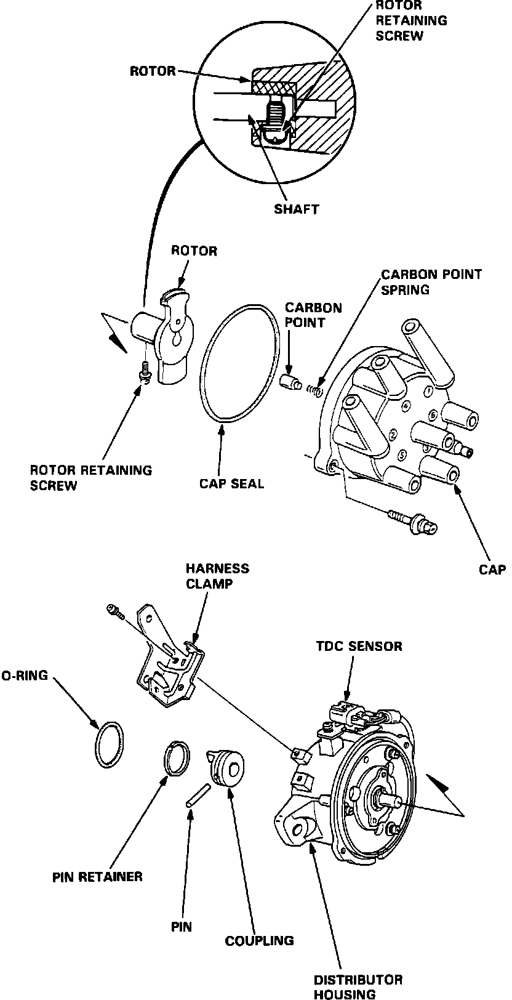

Distributor: Description and Operation
Exploded View:

The distributor acts as a rotary switch, distributing the firing voltage at the instant of ignition to the spark plugs in a pre-set sequence. The distributor is driven by the camshaft and is located on the left side of the engine. This distributor has an external coil and ignitor unit and gets signals electronically by the the PGM-FI system.